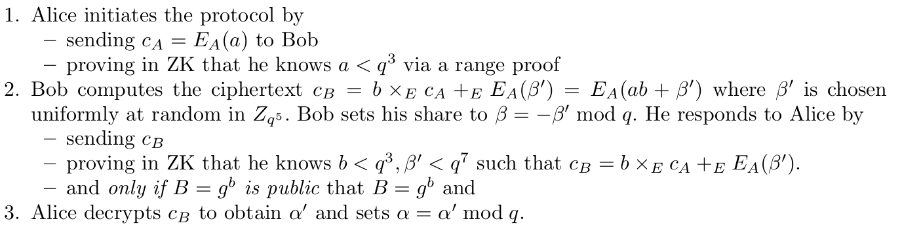
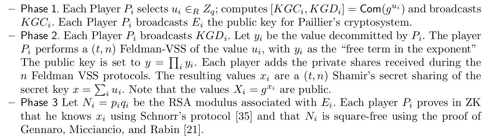
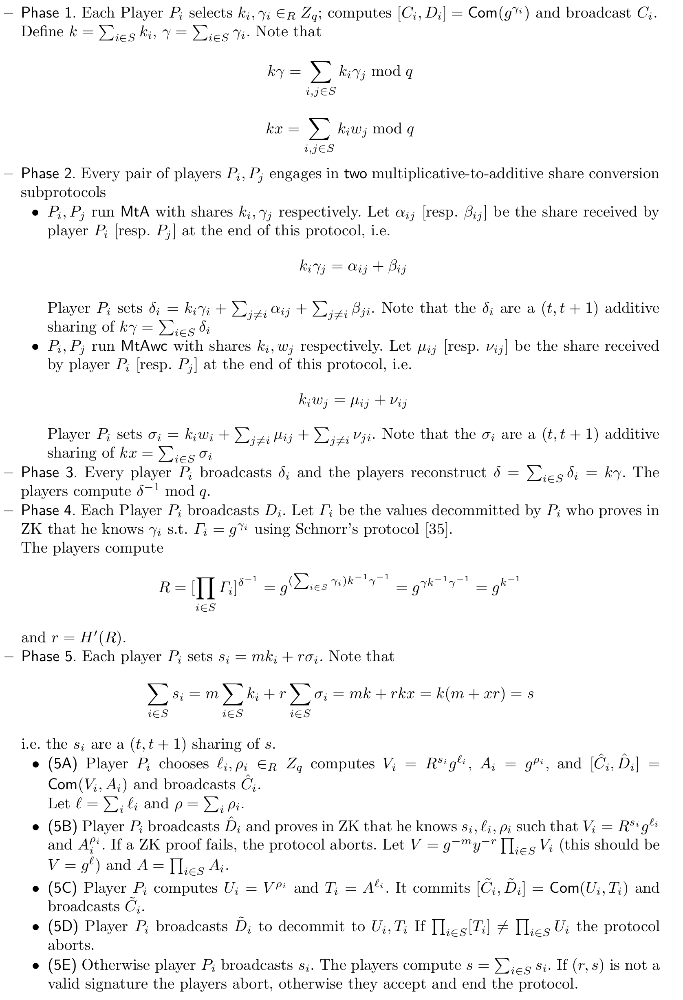
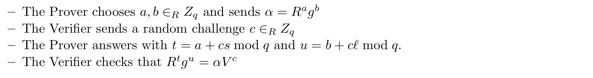

$(t, n)$ case from Gennaro & Goldfeder (2019) #
Important note: This paper has some corrections addressing errors and wrong conjectures from the first version. Although we will point out such errors, it is important to make sure that the implementation meets the updated version of the protocol.
Note on notation: Different from the previous works presented in this document, this work uses multiplicative notation for groups.
In this work, Genaro & Goldfeder propose a new method for a $(t, n)$ signature scheme. However, we have to keep in mind that when they say $(t, n)$, they mean that any subset of $t + 1$ parties can jointly sign but any smaller set cannot, which is slightly different from the concept presented in other works reviewed in this document. Also, this work focuses on the DSA signature scheme but the results can be easily applied to ECDSA as the latter is an elliptic curve variant of the former. Genaro & Goldfeder propose a solution based on the Paillier encryption scheme to realize a functionality that transforms multiplicative shares into additive ones, along with non-malleable equivocable commitments to ensure a correct computation against malicious adversaries. Also, he uses Feldman’s verifiable secret-sharing scheme (VSS) to ensure the threshold security of the signing process.
Preliminaries #
In this section, we present three definitions to understand the signing protocol by Gennaro & Goldfeder. First, we will explain what is a non-malleable equivocable commitment. Second, we will explain the specification of the DSA signature scheme. And third, we will explain the concept of Feldman’s VSS.
DSA signature scheme #
The Digital Signature Algorithm (DSA) is a signature scheme whose security relies on the discrete logarithm problem. The public paramenters of this scheme are a cyclic group $\mathcal{G}$ with order $q$, a generator $g$ for $\mathcal{G}$, a hash function $H: \{0, 1\}^* \rightarrow \mathbb{Z}_q$, and a hash function $H': \mathcal{G} \rightarrow \mathbb{Z}_q$. The specifications of the algorithms are presented next:
- $\textsf{KeyGen}$: on input a security parameter, the algorithm outputs a secret key $x$ chosen at random from $\mathbb{Z}_q$, and also outputs a public key $y = g^x$ in $\mathcal{G}$.
- $\textsf{Sign}$: On input a message $M$, do the following:
- Compute $m = H(M)$.
- Choose $k \in \mathbb{Z}_q$ at random.
- Compute $R = g^{k^{-1}}$ in $\mathcal{G}$ and $r = H'(R)$ in $\mathbb{Z}_q$.
- Compute $s = k(m + x \cdot r) \mod q$.
- Output $\sigma = (r, s)$.
- $\textsf{Ver}$: on input $M$, $\sigma$ and $y$, do:
- Compute $m = H(M)$.
- Check that $r, s \in \mathbb{Z}_q$.
- Compute $R' = g^{(ms^{-1} \mod q)}y^{(rs^{-1} \mod q)}$
- Accept if $H'(R') = r$.
We stress that ECDSA is a particular case of DSA where the group $\mathcal{G}$ is an elliptic curve group. For this work, all the results presented also hold for ECDSA.
Share conversion protocol #
The goal of the share conversion protocol is to transform multiplicative into additive shares of a secret. Specifically, suppose that $x = ab \mod q$ where $a, b \in \mathbb{Z}_q$ are the multiplicative shares held by Alice and Bob respectively. Using a share conversion protocol, Alice and Bob will compute $\alpha, \beta \in \mathbb{Z}_q$ such that $\alpha + \beta = x = ab \mod q$. In the end, Alice will hold bot $\alpha$ and $a$, while Bob will hold $\beta$ and $b$.
For this version of the protocol, we assume that Alice has distributed a key $A$ for an additively homomorphic scheme $\mathcal{E}$ over an integer $N$. In the protocol, we assume that $B = g^b$ is public to force Bob to provide a correct $b$. This protocol (including the additional check) is denoted as $\textsf{MtAwc}$ (“multiplicative to additive with check”). The protocol without this check is denoted by $\textsf{MtA}$. We present the protocol next:

Non-malleable equivocable commitments #
A trapdoor commitment scheme is a commitment that is information-theoretic hiding and computationally binding, whereas, for the latter, the scheme admits a trapdoor such that when known, it reveals the commited message entirely. However, this trapdoor is hard to compute efficiently.
A trapdoor commitment scheme consists in four algorithms $\textsf{KG}$, $\textsf{Com}$, $\textsf{Ver}$, $\textsf{Equiv}$ such that:
- $\textsf{KG}$ is the algorithm for key generation which outputs a pair $(\textsf{pk}, \textsf{tk})$, where $\textsf{pk}$ is the public-key associated with the commitment scheme and $\textsf{tk}$ is the trapdoor key.
- $\textsf{Com}$ is the commitment algorithm. On input $\textsf{pk}$ and a message $M$, it outputs $[C(M), D(M)] = \textsf{Com}(\textsf{pk}, M, R)$ where $R$ are the coin toses. $C(M)$ is the commitment string, while $D(M)$ is the decommitment string. The latter is kept secret until the opening time.
- $\textsf{Ver}$ is the verification algorithm. On input $C$, $D$ and $\textsf{pk}$, it either outputs a message $M$ or $\bot$.
- $\textsf{Equiv}$ is the algorithm that opens a commitment in every possible way given the trapdoor string. On input $\textsf{pk}$, stringgs $M$, $R$ such that $[C(M), D(M)] = \textsf{Com}(\textsf{pk}, M, R)$, a message $M' \neq M$ and a string $T$. if $T = \textsf{tk}$, then $\textsf{Equiv}$ will output $D'$ such that $\textsf{Ver}(\textsf{pk}, C(M), D') = M'$.
In real-world applications, it is common to use a hash function $H$ to instantiate these commitments. For a message $m$, we define the commitment as $h = H(m, r)$ where $r$ is randomly chosen with a length equal to the security parameter $\lambda$.
Feldman’s VSS #
Feldman’s VSS is an extension of Shamir’s secret-sharing scheme. To share a secret $\sigma \in \mathbb{Z}_q$, the dealer generates a random polynomial $p$ such that $p(0) = \sigma$. This means that the polynomial has the following structure:
$$ p(x) = \sigma + a_1 x + a_2 x^2 + \cdots + a_t x^t \mod q. $$As in Shamir’s secret-sharing, each party $P_i$ receives $\sigma_i = p(i) \mod q$ as a share of the secret value $\sigma$. The extension comes in place when the dealer of the secret also publishes $v_i = g^{a_i}$ in the group $\mathcal{G}$ for all $i \in [t]$, and $v_0 = g^\sigma$. With this modification, each party $P_i$ can check the consistency of each share $\sigma_i$ by checking the equality
$$ g^{\sigma_i} \stackrel{?}{=} \prod_{j=0}^t v_j^{i^j} $$in $\mathcal{G}$. In the case that some party complains about the check, the protocol must abort.
Key generation #
The goal of the key generation is to obtain $(t, n)$ shares of the private key that will be used as input in the signing phase. For this specification, we assume that each party $P_i$ has an associated public key for the additively homomorphic encryption scheme $\mathcal{E}$. Below, present the protocol:

Signing #
Now, we present the signing protocol. It receives $m = H(M)$ as input, where $M$ is the message that will be signed. Additionally, the parties have $(t, n)$ shares of the private key $x$.
Let $S \subseteq [n]$ be the set of parties involved in the signing protocol, such that $\vert S \vert = t + 1$. Knowing that the key generation protocol returned Shamir shares of the private key $x$, each party can construct the appropriate Lagrange coefficients $\lambda_{i, S}$ used to interpolate the polynomial used in the secret-sharing scheme. If $x_i$ are the Shamir secret shares of $x$, each party can compute $w_i = \lambda_{i, S} \cdot x_i$. Notice that $w_i$ is a (t, t + 1) share of $x$ held by the party $P_i$, which means that $x = \sum_{i \in S} w_i$. Also, the parties have public values $X_i = g^{x_i}$, therefore, each party can compute $W_i = g^{w_i} = X_i^{\lambda_{i, S}}$.

Notice that in Step (5B) of the previous protocol, the party $P$ broadcasts $V = R^s g^l$ and $A = g^\rho$ and he needs to prove that he knows $s$, $l$ and $\rho$ for which the previous equations hold. To prove that he knows $\rho$, it can be used a classic Schnorr proof. To prove that he know $s$ and $l$, they can use the following protocol:

Security concerns #
- In the paper, Gennaro & Goldfeder say that the last version of the paper has some fixes in the protocol and its proofs of security for which the previous version is not correct. Therefore, it is important to double-check which version of the protocol has been implemented.
- At the end of the signing protocol, the parties need to verify that the produced signature is valid using the standalone version of the verify algorithm in the DSA/ECDSA signature scheme.
- The previous version of the protocol did not check the range of the values encrypted with the Paillier encryption scheme which produces a leak of information about honest parties’ shares.
- Works like Tymokhanov & Shlomovits (2021) and Makriyannis & Peled (2021) have shown that removing the ZK-proofs lead into an insecure protocol. Therefore, it is important to check that all the proofs are correctly executed.
- The protocol assumes the existence of a broadcast channel as well as point-to-point channels connecting every pair of players. In this case, we need to check that these conditions are correctly realized.
- There is a small typo in the non-malleable equivocable commitment in the $\textsf{Com}$ algorithm where they say “where $r$ is the coin tosses”, but the correct version is “where $R$ is the coin tosses”.
- The authors say that non-malleable commitments that are not “concurrently” secure are not suitable for the protocol. Instead, an implementation should consider a concurrent secure non-malleable commitment scheme.
- It is necessary to check that whenever Feldman’s VSS protocol complains about a bad check-in of the shares, the protocol will abort.
- The authors recommend that, in a typical choice of parameters, $N$ is approximately $q^8$. Also, they stress that the parties should check the size of N to ensure the ZK property in the proofs.
- It is important to remember that the message to be signed is $m = H(M)$ and not $M$ itself.
- In the signing protocol there are a series of checks that need to be computed, specifically, in Steps 5B, 5D, and 5E.
- The paper presents Section 5 as a historical record, however, the simplified protocol presented in that section is not secure.
- If the implementation uses another additively homomorphic encryption scheme, it requires an assumption analogous to Paillier-EC or a ZK-proof for the statement in the $\textsf{MtAwc}$ protocol. Also, it is needed to guarantee security against “adversarially chosen” public keys.
- In the Signature generation protocol, Phase 5, Step (5C), there is a typo: the player proves in ZK that $A_i = g^{\rho_i}$.
ZK-proofs #
- In the $\textsf{MtAwc}$ protocol, Step 1, Alice needs to prove in ZK that she knows $a < q^3$ using a range proof.
- In the $\textsf{MtAwc}$ protocol, Step 2, Bob proofs in ZK that he knows $b < q^3$, $\beta' < q^7$ such that the ciphertext $c_B = b \times_E c_A +_E E_A(\beta')$.
- In the Key generation protocol, Phase 1, each player $P_i$ commits to the value $g^{u_i}$.
- In the Key generation protocol, Phase 3, each party $P_i$ proofs in ZK the following statements:
- That he knows $x_i$ such that $X_i = g^{x_i}$ using a Schnorr’s protocol.
- That $N_i$ is square-free.
- In the Signature generation protocol, Phase 1, each party $P_i$ commits to the value $g^{\gamma_i}$.
- In the Signature generation protocol, Phase 4, each party $P_i$ proves in ZK that he knows $\gamma_i$ such that $\Gamma_i = g^{\gamma_i}$ using a Schnorr’s protocol.
- In the Signature generation protocol, Phase 5, each party $P_i$ computes the following commitments and ZK proofs:
- In Step (5A), the player $P_i$ commits to the value of $(V_i, A_i)$.
- In Step (5B), the player $P_i$ proves in ZK that he knows $s_i, l_i, \rho_i$ such that $V_i = R^{s_i} g^{l_i}$ and $A_i = g^{\rho_i}$.
- In Step (5C), the player $P_i$ commits to the value of $(U_i, T_i)$.
References #
- Gennaro, R., & Goldfeder, S. (2018). Fast Multiparty Threshold ECDSA with Fast Trustless Setup. In Proceedings of the 2018 ACM SIGSAC Conference on Computer and Communications Security (pp. 1179–1194). Association for Computing Machinery.
- Dmytro Tymokhanov, & Omer Shlomovits. (2021). Alpha-Rays: Key Extraction Attacks on Threshold ECDSA Implementations.